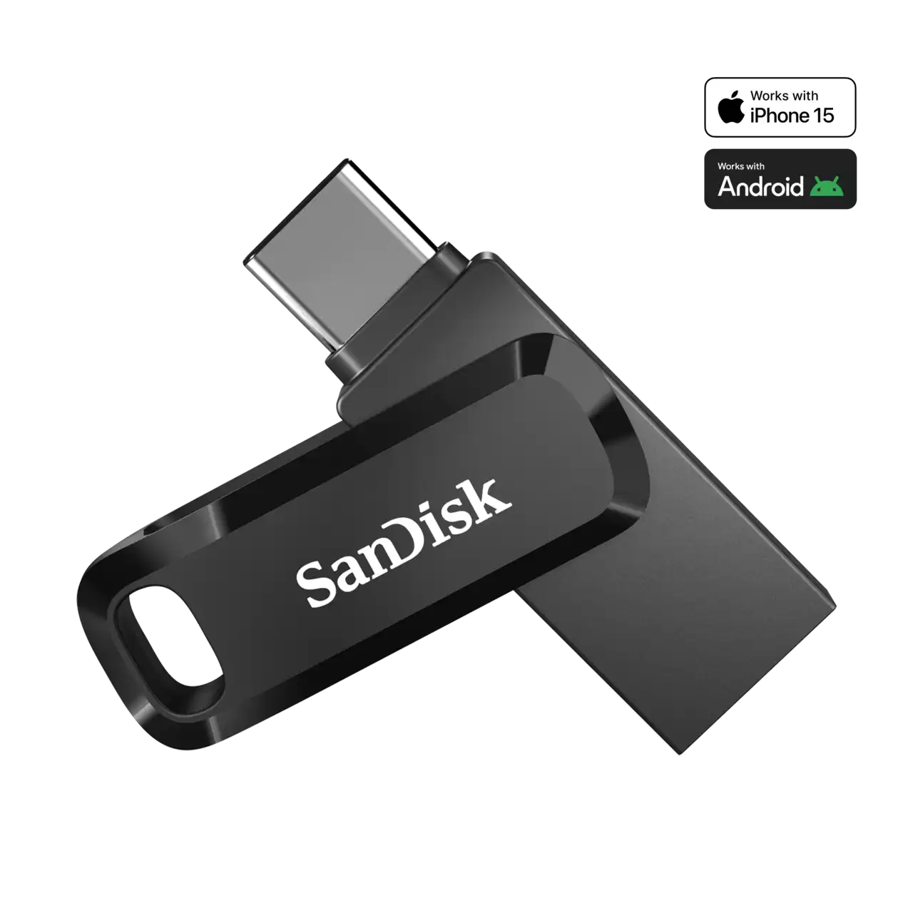

SanDisk Ultra Dual Drive Go USB Type-C™ - 256GB (Black)

Specifications
- 256GB storage capacity
- Dual connectors: USB Type-C™ and USB Type-A
- USB 3.2 Gen 1 with transfer speeds up to 400MB/s
- Works with Android smartphones, tablets, and computers
- Automatically backs up photos, videos, and contacts
- Swivel design with keyring loop
- SanDisk Memory Zone app support for file management
- Compact and portable – black finish
Description
The SanDisk Ultra Dual Drive Go makes it easy to transfer files between your USB Type-C™ smartphones, tablets, and USB Type-A computers. With a fast USB 3.2 interface, 256GB of storage, and a compact swivel design, it’s the perfect portable solution for backups and everyday storage. Built for convenience and flexibility, it combines performance with style in a sleek black finish.
Add to cart